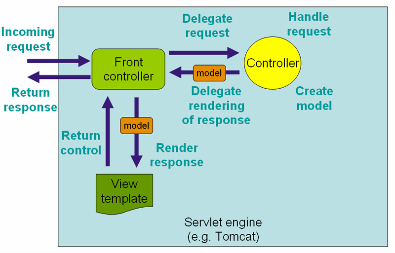

本文转载自：SpringMVC执行流程及源码解析
在SpringMVC中主要是围绕着DispatcherServlet来设计，可以把它当做指挥中心。这里先说明一下SpringMVC文档给出的执行流程，然后是我们稍微具体的执行流程，最后是流程大致的源码跟踪。关于很很很详细的源码解析，这里暂先不做。
官方文档中的流程
首先看下SpringMVC文档上给的流程图：

这张图片给了我们大概的执行流程：
- 用户请求首先发送到前端控制器DispatcherServlet，DispatcherServlet根据请求的信息来决定使用哪个页面控制器Controller（也就是我们通常编写的Controller）来处理该请求。找到控制器之后，DispatcherServlet将请求委托给控制器去处理。
- 接下来页面控制器开始处理用户请求，页面控制器会根据请求信息进行处理，调用业务层等等，处理完成之后，会把结果封装成一个ModelAndView返回给DispatcherServlet。
- 前端控制器DispatcherServlet接到页面控制器的返回结果后，根据返回的视图名选择相应的试图模板，并根据返回的数据进行渲染。
- 最后前端控制器DispatcherServlet将结果返回给用户。
更具体的流程
上面只是总体流程，接下来我们稍微深入一点，看下更具体的流程，这里没有图，只有步骤解析：
- 用户请求发送到前端控制器DispatcherServlet。
- 前端控制器DispatcherServlet接收到请求后，DispatcherServlet会使用
HandlerMapping来处理，HandlerMapping会查找到具体进行处理请求的Handler对象。 - HandlerMapping找到对应的Handler之后，并不是返回一个Handler原始对象，而是一个Handler执行链，在这个执行链中包括了拦截器和处理请求的Handler。HandlerMapping返回一个执行链给DispatcherServlet。
- DispatcherServlet接收到执行链之后，会调用Handler适配器去执行Handler。
- Handler适配器执行完成Handler（也就是我们写的Controller）之后会得到一个ModelAndView，并返回给DispatcherServlet。
- DispatcherServlet接收到Handler适配器返回的ModelAndView之后，会根据其中的视图名调用视图解析器。
- 视图解析器根据逻辑视图名解析成一个真正的View视图，并返回给DispatcherServlet。
- DispatcherServlet接收到视图之后，会根据上面的ModelAndView中的model来进行视图中数据的填充，也就是所谓的视图渲染。
- 渲染完成之后，DispatcherServlet就可以将结果返回给用户了。
源码
DispatcherServlet是一个Servlet，我们知道在Servlet在处理一个请求的时候会交给service方法进行处理，这里也不例外，DispatcherServlet继承了FrameworkServlet，首先进入FrameworkServlet的service方法：
1 | protected void service(HttpServletRequest request, HttpServletResponse response) |
HttpServlet中会根据请求类型的不同分别调用doGet或者doPost等方法，FrameworkServlet中已经重写了这些方法，在这些方法中会调用processRequest进行处理，在processRequest中会调用doService方法，这个doService方法就是在DispatcherServlet中实现的。下面就看下DispatcherServlet中的doService方法的实现。
请求到达DispatcherServlet
doService方法：
1 | protected void doService(HttpServletRequest request, HttpServletResponse response) throws Exception { |
DispatcherServlet开始真正的处理，doDispatch方法：
1 | protected void doDispatch(HttpServletRequest request, HttpServletResponse response) throws Exception { |
可以看到大概的步骤还是按照我们上面分析的走的。
查找请求对应的Handler对象
对应着这句代码mappedHandler = getHandler(processedRequest, false);，看下具体的getHandler方法：
1 | protected HandlerExecutionChain getHandler(HttpServletRequest request, boolean cache) throws Exception { |
继续往下看getHandler：
1 | protected HandlerExecutionChain getHandler(HttpServletRequest request) throws Exception { |
继续往下看getHandler，在AbstractHandlerMapping类中：
1 | public final HandlerExecutionChain getHandler(HttpServletRequest request) throws Exception { |
根据requrst获取handler
首先看下根据requrst获取handler步骤getHandlerInternal方法，在AbstractHandlerMethodMapping中：
1 | protected HandlerMethod getHandlerInternal(HttpServletRequest request) throws Exception { |
看下根据路径寻找handler的方法lookupHandlerMethod：
1 | protected HandlerMethod lookupHandlerMethod(String lookupPath, HttpServletRequest request) throws Exception { |
获取默认Handler
如果上面没有获取到Handler，就会获取默认的Handler。如果还获取不到就返回null。
处理String类型的Handler
如果上面处理完的Handler是String类型的，就会根据这个handlerName获取bean。
封装Handler执行链
上面获取完Handler，就开始封装执行链了，就是将我们配置的拦截器加入到执行链中去，getHandlerExecutionChain：
1 | protected HandlerExecutionChain getHandlerExecutionChain(Object handler, HttpServletRequest request) { |
获取对应请求的Handler适配器
getHandlerAdapter：
1 | protected HandlerAdapter getHandlerAdapter(Object handler) throws ServletException { |
缓存的处理
也就是对last-modified的处理
执行拦截器的preHandle方法
就是遍历所有的我们定义的interceptor，执行preHandle方法
使用Handler适配器执行当前的Handler
ha.handle执行当前Handler，我们这里使用的是RequestMappingHandlerAdapter，首先会进入AbstractHandlerMethodAdapter的handle方法：
1 | public final ModelAndView handle(HttpServletRequest request, HttpServletResponse response, Object handler) |
handleInternal方法，在RequestMappingHandlerAdapter中：
1 | protected final ModelAndView handleInternal(HttpServletRequest request, |
组装默认视图名称
前缀和后缀名都加上
执行拦截器的postHandle方法
遍历intercepter的postHandle方法。
处理最后的结果，渲染之类的
processDispatchResult方法：
1 | private void processDispatchResult(HttpServletRequest request, HttpServletResponse response, |
重点看下render方法，进行渲染：
1 | protected void render(ModelAndView mv, HttpServletRequest request, HttpServletResponse response) throws Exception { |
view.render就是进行视图的渲染，然后跳转页面等处理。
到这里大概的流程就走完了。其中涉及到的东西还有很多，暂先不做详细处理。